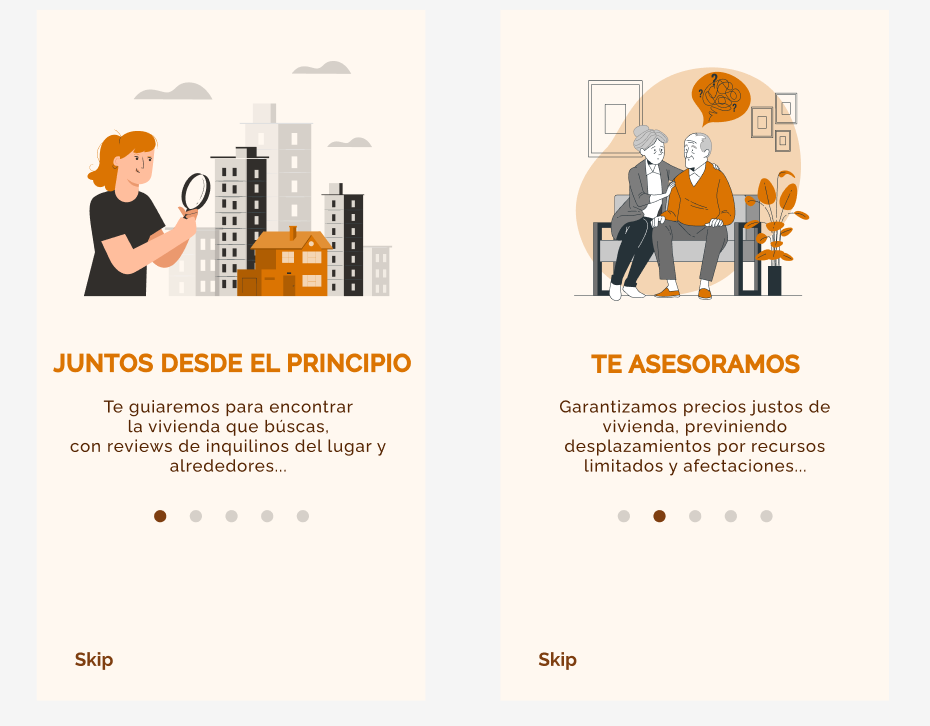

Theatrik provides comprehensive information about theater plays, including showtimes, locations, and ticket availability. Users can filter their searches by genre, date, and theater company, making it easy to find exactly what they are looking for. Additionally, the platform features user reviews and ratings, helping users make informed decisions about which plays to attend.
Theatrik aims to become the go-to platform for theater enthusiasts in Madrid, offering a centralized and user-friendly interface for discovering and booking theater events. With its extensive database and intuitive design, Theatrik is set to enhance the theater-going experience for residents and visitors alike.
We apologize that the Figma design for Theatrik is not currently available. We are working hard to make it accessible soon and appreciate your understanding and patience.
Key Features
Price Regulation: Ensures rental prices stay affordable via council management.
Data Management: Securely handles users' personal data.
User Feedback: Allows users to leave reviews about their rental experiences.
Certified Reviews: Only verified users, certified by the council and living nearby, can leave impactful feedback.
Design Highlights
User-Centric: Easy to use with intuitive navigation.
Modern Aesthetic: Clean, functional design using Tailwind CSS.
Responsive: Optimal experience on mobile and desktop.
Impact
The app helps prevent economic displacement and makes housing more accessible, benefiting both young and old residents.
Key Features
Peer Support: An app connecting individuals who have overcome addiction to mentor others in private settings, akin to a trusted coffee conversation.
Safe
Environment: Volunteers and users register with ID verification for enhanced safety and trust.
Human Connection: Users share personal stories and receive support from volunteers who have walked a similar path.
Design Highlights
User-Focused: Intuitive interface prioritizing privacy and ease of use.
Impactful: Aims to foster human connection and inspire recovery through shared experiences.Secure: Rigorous verification process ensures a safe environment for all users.
Purpose
The app aims to provide a compassionate platform where individuals battling addiction can find personal support and guidance from verified volunteers, helping them rebuild their lives.